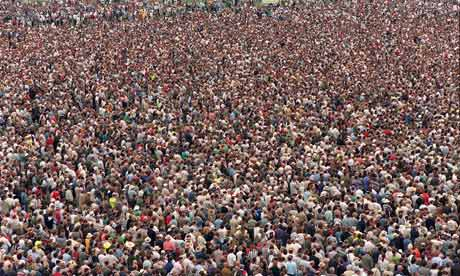
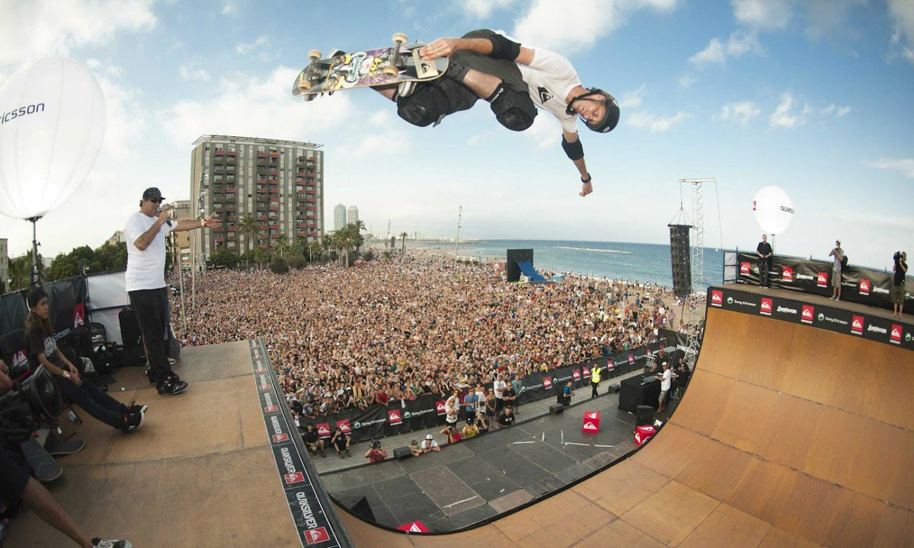

Multiplication Table
This is a multiplication table generator! Click on the row and column fields to increase or decrease the number of rows you want. When the table is made, a reset button will appear to remove the table and try again!
Rows
Column